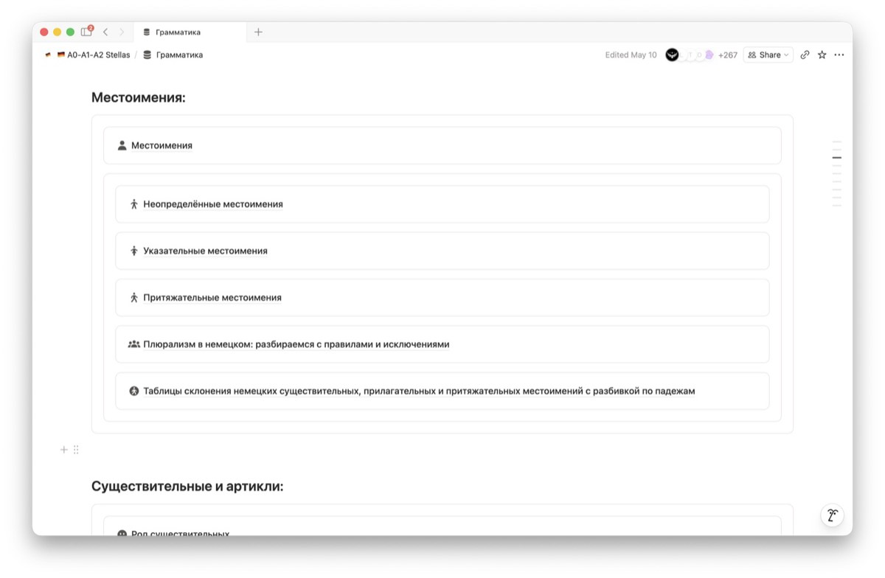
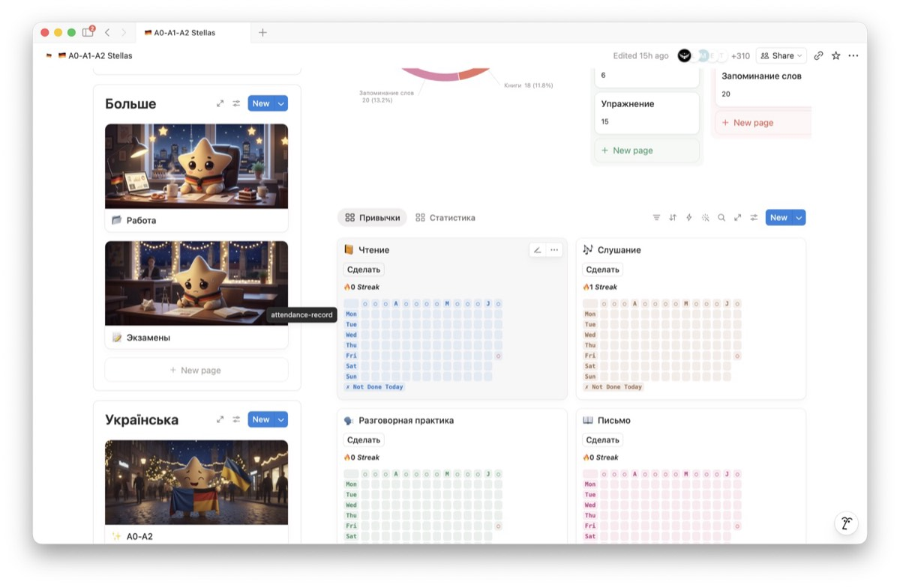
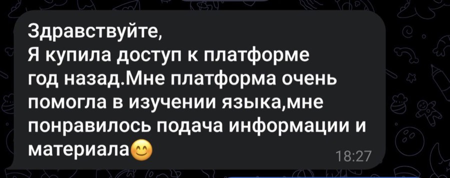

09Как это выглядит внутри
Платформа собрана в Notion — ставишь их приложение и открываешь материалы без интернета.



Глагол в немецком предложении стоит на втором месте. Всегда. Разбор порядка слов для тех, кто знает все слова, но собирает их в русском порядке.
Первый год в Австрии я говорил немецкими словами по русским правилам.
Сказал соседу: «Ich morgen komme nicht».
Он посмотрел на меня, как на говорящую собаку. Вроде звуки знакомые, а смысл не собирается.
Слова были правильные. Все три. Порядок был русский. А немец слушает не слова — он слушает конструкцию. Ему нужно знать, что происходит, уже на втором слове.
Хорошая новость: правило одно. Плохая: оно работает всегда, и его надо довести до автоматизма. Дальше — шесть ситуаций, где это правило разворачивается.
В обычном повествовательном предложении спрягаемый глагол стоит на второй позиции. Что окажется на первой — решаешь ты. Всё остальное подвинется. Глагол не подвинется никогда.
Начни предложение с другого — и посмотри, что будет
← листай предложение →
Что реально произошло
Подлежащее ich ушло за глагол. Это называется инверсия. Не «странное исключение», а прямое следствие правила: место два занято, подлежащему пришлось отойти на третье.
Главная ошибка новичка: считать позиции по словам. Позиция — это один смысловой блок. «Mit meinem besten Freund» — четыре слова и одна позиция.
Morgen ich fahre nach Wien.
Перед глаголом два блока: morgen и ich. Значит глагол оказался на третьем месте. Немец слышит это как сбой.
Morgen fahre ich nach Wien.
Перед глаголом один блок — morgen. Подлежащее ушло направо. Всё на местах.
Спрягаемая часть остаётся на месте два. Вторая часть — инфинитив, причастие или приставка — уезжает в самый конец. Между ними всё остальное. Это называется рамочная конструкция, Verbklammer.
↔ Mittelfeld — всё, что внутри рамки
Немец держит главное слово до конца.
«Ich habe gestern mit meinem Bruder über deine Idee…» — и только теперь выяснится, что именно: gesprochen (говорил) или gelacht (смеялся). Поэтому немца надо дослушивать до точки. И поэтому же ты не можешь начать фразу, не зная, чем её закончишь.
У некоторых глаголов приставка отделяется и уходит в конец предложения. В словаре стоит aufstehen, а в речи глагол разрывается пополам. Нажми — увидишь, куда девается «auf».
вставать · инфинитив в словаре
Ударение падает на приставку. Она всегда улетает в конец.
Ударение на корне. Эти приставки приросли навсегда.
Проверка на слух: скажи слово вслух. ÁUFstehen — ударение на приставке, значит отделяется. verSTÉHen — ударение на корне, значит нет.
Два типа вопросов — два разных места для глагола. Переключай и смотри, куда он переезжает.
← листай предложение →
Стоит поставить weil, dass, wenn, obwohl или ob — и правило второго места отменяется. Спрягаемый глагол едет в конец своей части предложения.
← листай предложение →
…, weil ich bin krank.
Так говорят почти все, кто учит немецкий. И так же говорят сами немцы в разговорной речи — но на экзамене это ошибка.
…, weil ich krank bin.
Глагол bin в самом конце. Запомни ритм: weil → всё остальное → глагол → точка.
Середину предложения тоже не сваливают в кучу. Порядок по умолчанию — TeKaMoLo: когда → почему → как → куда.
Это умолчание, а не закон. Блок можно вынести вперёд, если хочешь на нём акцент — но тогда он занимает первое место, и глагол всё равно остаётся вторым.
Четыре задания. Тапай слова в правильном порядке. Ошибёшься — скажу, где именно.
Задание 1 из 4
Шпаргалка
Русский порядок слов —
это свобода.
Немецкий — расписание.
Опоздал — не поняли.
Дальше — про мою платформу
Ты только что разобрался с порядком слов. Честно разобрался — правило простое.
А теперь представь: через три дня ты открываешь рот в реальном разговоре. Собеседник ждёт. И глагол снова уезжает не туда, потому что голова думает по-русски быстрее, чем ты успеваешь вспомнить правило.
Между «я понял» и «я так говорю» лежит не понимание. Лежит сотня повторений. Их нужно где-то взять — и желательно не по одной случайной статье в неделю.
Порядок слов тянет за собой падежи — потому что в середине предложения Dativ идёт перед Akkusativ. Падежи тянут предлоги. Предлоги тянут склонение прилагательных. Учить это по отдельным постам — то же самое, что собирать пазл, глядя на одну деталь за раз.
Что внутри
Платформа собрана в Notion — ставишь их приложение и открываешь материалы без интернета.


Скриншоты из личных сообщений. Как есть, без правок.




Цена
Вопросы — в личку @stellasdeutsch
Правило ты уже знаешь.
Осталось
перестать думать
по-русски.
Тапни любое немецкое предложение на странице — услышишь, как оно звучит. Ритм в порядке слов важнее правил.